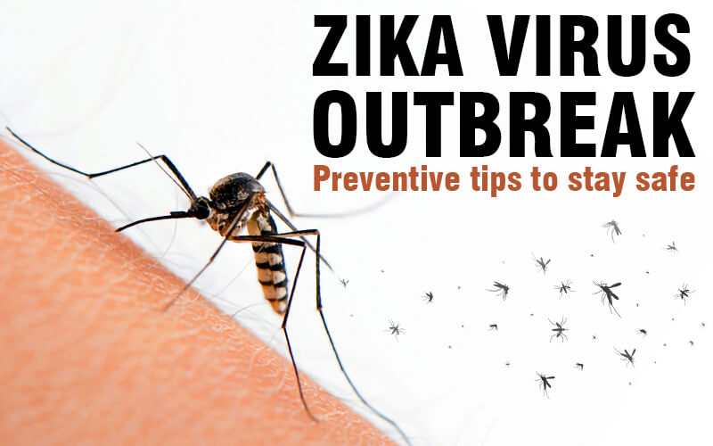

Tuberculosis
- About: Bacterial infection affecting lungs.
- Symptoms: Coughing blood, weight loss, fever.
- Do's: Complete full course of medication.
- Don'ts: Avoid missing any doses.
- Precautions: BCG vaccine, cover mouth when coughing.
- Concern: Persistent cough or unexplained weight loss.
Typhoid
- About: Bacterial infection spread via contaminated food/water.
- Symptoms: Fever, abdominal pain, fatigue.
- Do's: Drink clean water, complete antibiotics.
- Don'ts: Avoid street food, dairy products.
- Precautions: Sanitation, vaccination.
- Concern: Fever >3 days, diarrhea or vomiting.
Toothache
- About: Pain in or around a tooth due to decay, infection, or sensitivity.
- Symptoms: Sharp or throbbing pain, swelling, difficulty eating.
- Do's: Rinse with warm salt water, apply cold compress, visit dentist.
- Don'ts: Avoid sugary foods, don’t delay dental checkup.
- Precautions: Brush twice daily, regular dental visits.
- Concern: Pain lasting more than 1–2 days or with swelling.
Urinary Tract Infection (UTI)
- About: Bacterial infection in urinary system.
- Symptoms: Burning urination, frequent urge, lower abdominal pain.
- Do's: Drink water, take antibiotics as prescribed.
- Don'ts: Don’t hold urine for long periods.
- Precautions: Good personal hygiene, urinate after intercourse.
- Concern: Fever, back pain, blood in urine.

Zika Virus
- About: Mosquito-borne virus, dangerous during pregnancy.
- Symptoms: Rash, joint pain, fever, red eyes.
- Do's: Rest, fluids, pain relievers.
- Don'ts: Avoid mosquito exposure, especially pregnant women.
- Precautions: Insect repellent, covered clothing.
- Concern: If pregnant and exposed.